Glaze Chemistry
Glaze chemistry is the study of how the oxide chemistry of glazes relate to the way they fire. It accounts for color, surface, hardness, texture, melting temperature, thermal expansion, etc.
Key phrases linking here: glaze chemistry, body chemistry, chemistry - Learn more
Details
The chemistry of a glaze is expressed like a recipe, except that the items are oxides and the amounts can be by weight (an analysis) or numbers of molecules (a formula). Glaze chemistry is about converting from recipe to formula and back and about learning what each oxide contributes to the physical properties of the fired glaze. And about their interactions.

These two glazes share the same chemistry but don't melt the same. Knowing the reasons why turns theoretical chemistry into practical information.
Let's switch back to a theoretical model, that chemistry is directly connected to the way glazes fire. Physical properties like color, hardness, melting temperature, thermal expansion, leachability, etc. are all products of the oxides present in the melt (especially their proportions and interactions). Companies that understand specifics about the relationship between chemistry and fired properties of glazes, within certain temperature and process systems, have often leveraged this knowledge to develop important products.
An education in glaze chemistry usually starts with a study of each of the dozen or so oxides that a fired glaze is conceptually structured from and what properties each contributes to the fired glaze (and their interactions). Oxides are divided into three categories (which flux, stabilize and build glass), oxides within each contribute more specifically to properties of the fired glass. A study of what materials contribute what oxides usually follows. Finally, people learn how to use a computer program to study existing glazes and explain their behavior and start adjusting them to alter properties or fix problems. Understanding this is well within the reach of anyone and is actually much simpler than trying to grasp the relationship between the recipe of a glaze and its firing behavior. Software, like an account at insight-live.com, automates tracking of material analyses and calculating the composite formula of a mix of them.

This glaze gels and is very difficult to use. Glaze chemistry can fix this by sourcing the same oxides from different materials.
Again, glaze chemistry cannot be taken in isolation from the solid state of materials that supply the oxides. The manner and temperatures at which they decompose to liberate their oxides is determined by many factors. For example, a mineral and frit could have close to the same chemistry, but they melt in completely different ways (because the former is crystalline and the latter is a glass). Calcined alumina appears to be just Al2O3 on paper, but incredibly high temperatures are needed to convince it to release its oxide to a glaze melt. So, while in theory, chemistry considers all materials on an equal footing as suppliers of oxides, in practice, materials themselves have unique melting behaviours. A glaze will melt much better if it sources MgO from a frit instead of dolomite or talc. Feldspar far more readily releases SiO2 to the melt than does raw quartz. In fact, quartz particles literally need to dissolve in a melt of other things, be taken into solution in it, normal kiln temperatures will not melt them. Other materials must interact; they do not melt on their own (e.g. calcium carbonate and dolomite are refractory enough to be used for making kiln bricks, but when combined in the right way with others, they will actively melt).
There are other factors that affect the accuracy of thermal expansion prediction:
-Some oxides, like Li2O do not impose their expansions in a linear fashion or in accordance with their proportion.
-The degree to which a glaze is completely melted determines the degree to which its expansion calculation is valid.
-Crystallization: A melt that freezes to a crystalline solid has a very different thermal expansion than when it freezes to a glass.
-Non melting particles: Zircon imposes its expansion as a non-participant in the glass structure, this is very different than if it were to melt and participate in the glass chemistry. Alumina (calcined vs hydrate) is a similar story.
-Oxides interact: The expansion contribution of one may be different depending on which other oxides are present.
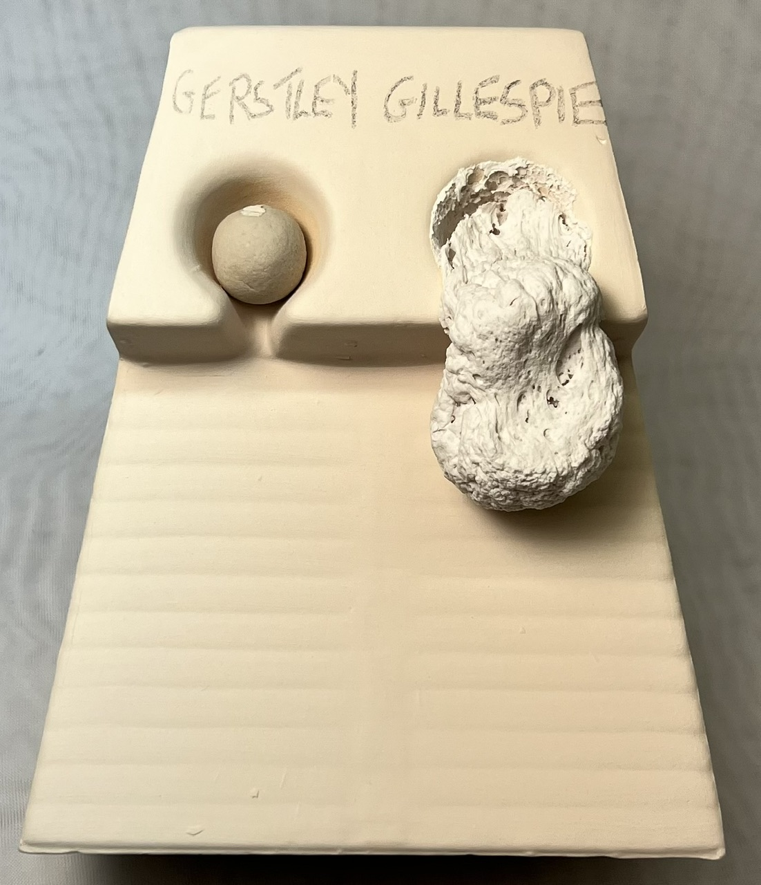
Glaze chemistry won't tell you why these similar materials fire so differently.
Without glaze chemistry, you cannot properly answer:
• Why is my glaze leaching? Is it likely to leach?
• Why is this glaze so touchy and difficult to keep consistent?
• How do I fix crazing, blistering, pinholing, settling, gelling, clouding, leaching, crawling, marking, scratching, powdering?
• How can I change the firing temperature? The gloss? Mattness?
• Why doesn’t this colorant work in this base glaze?
• How do I substitute materials that are expensive, problematic, or unavailable? One frit for another?
• How can I best utilize raw materials that I have easy and inexpensive access to? Use them in the highest possible percentages?
• Can I predict what possible weaknesses my glazes will have?
• How can I create and optimize base glazes that I can opacify, crystallize or variegate?
Do you need to know about Stull Charts to do glaze chemistry? That depends. Are you studying glazes to understand their systems? Then, yes, you are working in "absolute mode". You will also need a LIMS to record, organize and study all the data your study creates. Are you just trying to adjust an existing glaze to solve a problem or improve it? Then, no, you are working in "relative mode".
Chemistry in Clay Bodies
As noted, glaze chemistry is a relative science and changes to the chemistry of a glaze are interpreted as to what it will do in a relative sense (e.g. melt lower, thermally expand more, be more or less matte, etc). The chemistry of bodies is not normally considered indicative of fired properties (for example, one cannot calculate the thermal expansion of a clay body). Thermal expansion calculations assume a glass where all oxides can impose their proportionate expansion on the whole. This does not work for crystalline solids. Clay bodies do not melt like glazes, the oxides do not form a homogeneous glass. They undergo complex crystallization while cooling in the kiln. A glass and a crystal of the same chemistry usually have wildly different physical properties. Variations in particle size distribution, particle mineralogy and shape, firing speed, atmosphere and duration of firing all affect the progressive stages of decomposition and play out of interactions that break and build molecular bonds; these variations are evident in the fired product and all beyond the scope of the chemistry. Consider SiO2 oxide content: It may be equal in two bodies, but one may have most of the SiO2 in quartz grains and the other might have it as a molecular component of feldspar and kaolin. These will, of course, have vastly different thermal expansions.
Related Information
Glaze calculation in the 1960s
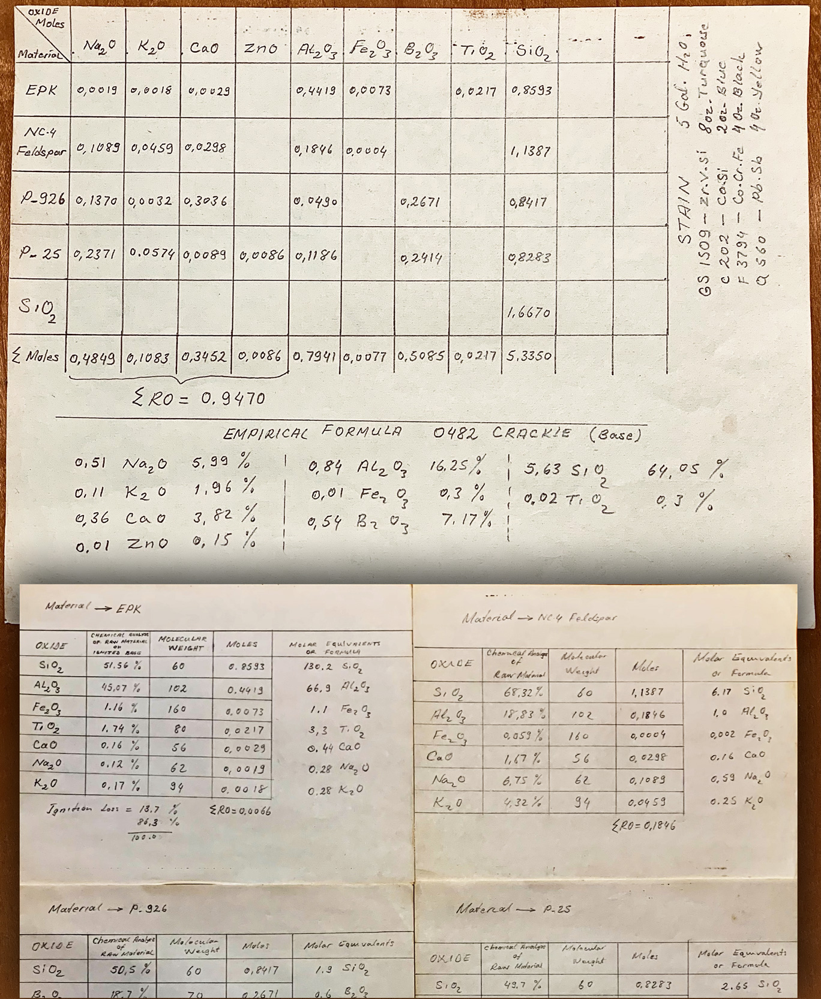
This picture has its own page with more detail, click here to see it.
This batch-to-formula calculation was done by Albert E. Holthaus at Modern Art Products Company in Kansas City, MO (during the 1960s). Doing this not only seems quaint today, but suppliers put up roadblocks to doing it.
Notice that he took the manufacturer-supplied percentage analysis for each material (bottom) and calculated the unity formula for use in his batch to formula calculation (top). The recipe material weight amounts are missing in the latter; this appears to be his effort to create a documentation page of the recipe on the oxide formula level (this is what mattered to him). It was a time when frit formulas were published by their manufacturers. He also calculated the glaze's chemistry as a percentage analysis, likely to lay a basis to assess it against stated requirements from stain suppliers (certain stains only work when the host glaze chemistry meets a certain profile).
Doing this now is so much simpler. But almost no one actually does! The closest most technicians get to oxide formulas is choosing a frit from a list of ones for which the chemistry given by the manufacturer is only approximate.
Trying to avoid knowing anything about glaze chemistry? Be ready for drama!

This picture has its own page with more detail, click here to see it.
Maybe you don't think it is necessary to know anything about glaze chemistry to be a potter. Or a technician at a production facility. This thinking depends on how much mystery you mind tolerating. Because the reason for many of the problems you will encounter with glazes relates fundamentally to their chemistry. Perhaps you have other "social" actors in your sphere who also specialize in the "know as little technical stuff as possible" mindset. Who treat glazes like acrylic paint that comes in tubes - it is just color! From these people, you will get buying advice on expensive jars of tacky-looking "goop" that you have to laboriously paint on in layers. Or it will mean you'll be more likely to get trapped on the recipe treadmill, addicted to the traffic of recipes that never seem to work.
Glaze chemistry works best when changing material amounts, not material types
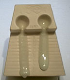
This picture has its own page with more detail, click here to see it.
Two glazes, same chemistry, different materials. The glaze on the left is sourcing CaO from wollastonite, the one on the right from calcium carbonate. Thus the oxide chemistry of the two is the same but the recipe of materials sourcing that chemistry is different. The difference in this GLFL test for melt flow is an expression of how choosing different mineral sources to source an oxide can produce melting patterns that go outside what the chemistry suggests. The difference here is not extreme, but it can be much more.
Two stains. 4 colors. Will the guilty oxide please step forward.

This picture has its own page with more detail, click here to see it.
These pairs are G2934 matte and G2916F glossy cone 6 base glaze recipes. The left pair has 5% maroon stain added, the right pair 5% purple stain. Why? The Mason Colorworks reference guide has the same precaution for both stains: the host glaze must be zincless and have 6.7-8.4% CaO (this is a little unclear, it is actually expressing a minimum, the more the CaO the better). The matte recipe calculates to 11% CaO, the glossy to 9%. So there is enough CaO. The problem is MgO (it is the mechanism of the matteness in the left two), it impedes the development of both colors (although not mentioned on the Mason docs).
Ceramic Oxide Periodic Table

Pretty well all common traditional ceramic base glazes are made from less than a dozen elements (plus oxygen). Go to the full picture of this table and click or tap each of the oxides to learn more (on its page at digitalfire.com). When materials melt, they decompose, sourcing these elements in oxide form. The kiln builds the glaze from them, it does not care what material sources what oxide (assuming, of course, that all materials do melt or dissolve completely into the melt to release those oxides). Each of these oxides contributes specific properties to the glass. So, you can look at a formula and make a good prediction of the properties of the fired glaze. And know what specific oxide to increase or decrease to move a property in a given direction (e.g. melting behavior, hardness, durability, thermal expansion, color, gloss, crystallization). And know about how they interact (affecting each other). This is powerful. A lot of ceramic materials are available, hundreds - that is complicated when individual materials source multiple oxides. Viewing a glaze as a simple unity formula of ceramic oxides is just simpler.
This is crazing. On functional ware. Not good.
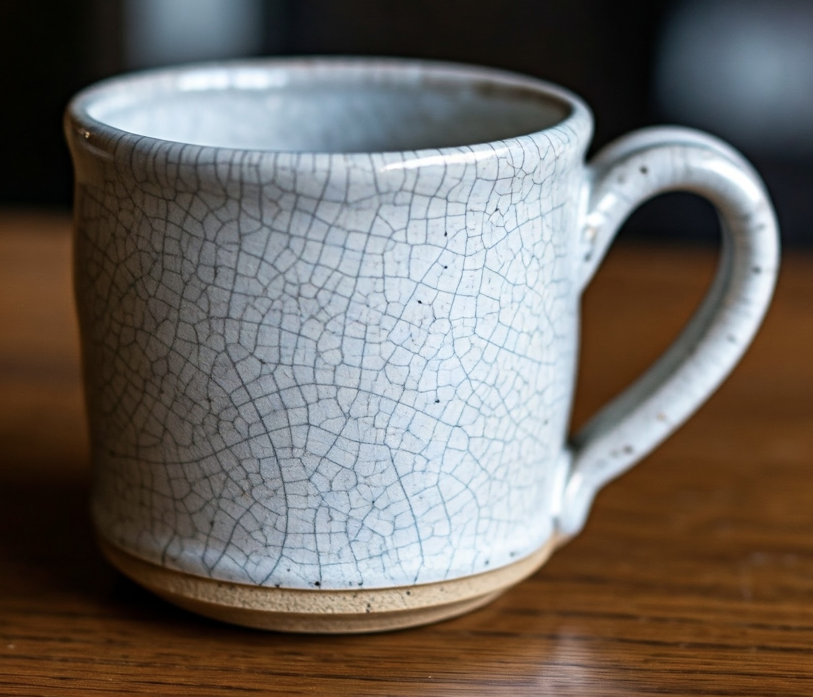
AI generated with the prompt: A crazed glaze on a stoneware pottery mug.This picture has its own page with more detail, click here to see it.
This glaze is "stretched" on the clay so it cracks. When the lines are close together like this it is more serious. If the effect is intended, it is called "crackle" (but no one should intend this on functional ware). Potters, hobbyists and artists invariably bump into this issue whether using commercial glazes or making their own.
"Art language" solutions don't work, at least some technical words are needed to understand it. Crazing is a mismatch in the thermal expansions of glaze and body. Most ceramics expand slightly on heating and contract on cooling. The amount of change is very small, but ceramics are brittle and glazes are rigidly attached. If they are stretched on the ware cracks will occur to relieve the stress (usually during cooling in the firing but sometimes much later). All glaze and body manufacturers advise against crazing on functional ware.
Two glazes of the same chemistry:
But supplied by different sets of materials
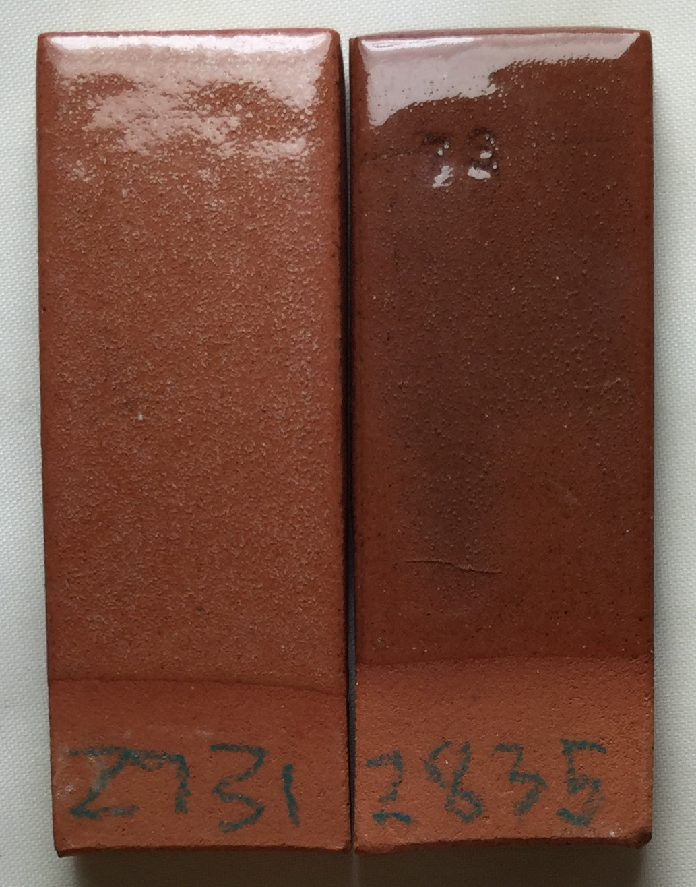
This picture has its own page with more detail, click here to see it.
These two specimens are the same terracotta clay fired at cone 03 in the same kiln. The glaze on the left combines 30% frit with five other materials. The one on the right mixes 90% frit with one other material (kaolin). Ulexite is the main source of boron in #1, it decomposes during firing, expelling 30% of its weight as gases, mostly CO2, forming micro-bubbles. Each of the six materials in that recipe has its own melting characteristics; their interaction creates a non-homogeneous glass containing phase separations (discontinuities) that affect the fired surface. In the fritted glaze, by contrast, all the particles soften and melt in unison and produce no gas. Notice that it has also interacted with the body, fluxing and darkening it (thus forming a better interface). And it has passed (and healed) more of the bubbles from the body.
Growing incredible glaze crystals is also about the chemistry
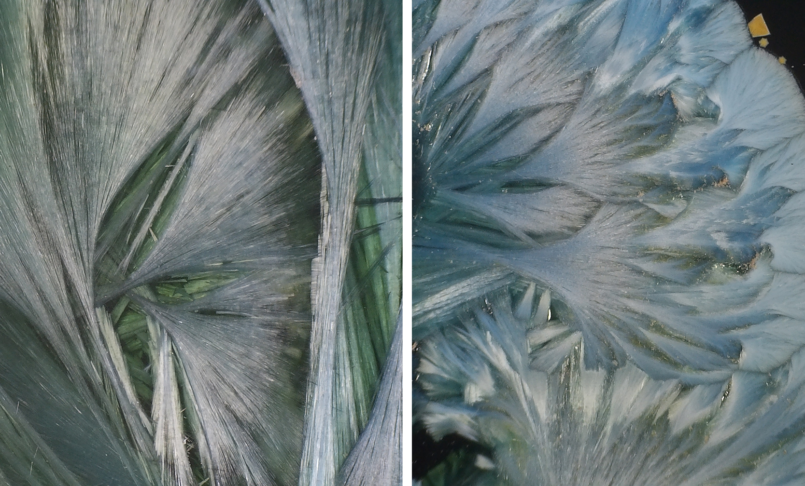
This picture has its own page with more detail, click here to see it.
Closeup of a crystalline glaze. Crystals of this type can grow very large (centimeters) in size. These grow because the chemistry of the glaze and the firing have been tuned to encourage them. This involves melts that are highly fluid (lots of fluxes) with added metal oxides and a catalyst. Typically, the fluxes are dominated by K2O and Na2O (from frits) and the catalyst is zinc oxide (enough to contribute a lot of ZnO). Because Al2O3 stiffens glaze melts, preventing crystal growth, it can be almost zero in these glazes (clays and feldspars supply Al2O3, so these glazes have almost none or either of them). The firing cycles involve rapid descents, holds and slow cools (sometimes with rises between them). Each discontinuity in the cooling curve creates specific effects in the crystal growth. These kinds of glazes are within the reach of almost anyone today since electronic controller-equipped kilns are now commodity items - one can fiddle with the chemistry and manage the testing of glazes in their insight-live.com account. But be ready for work, others on this path have done hundreds of firings to perfect a recipe and scedule.
The same glaze fires very differently depending on kiln cooling rate

This picture has its own page with more detail, click here to see it.
Both mugs use the same cone 6 oxidation high-iron (9%), high-boron, fluid melt glaze. Iron silicate crystals have completely invaded the surface of the one on the left, turning the gloss surface into a yellowy matte. Why? Multiple factors. This glaze does not contain enough iron to guarantee crystallization on cooling. When cooled quickly it fires the ultragloss near-black on the right. As cooling is slowed at some point the iron will begin to precipitate as small scattered golden crystals (sometimes called Teadust or Sparkles). As cooling slows further the number and size of these increases. Their maximum saturation is achieved on the discovery, usually by accident, of the likely narrow temperature range they form at (normally hundreds of degrees below the firing cone). Potters seek this type of glaze but industry avoids it because of difficulties with consistency.
Example of a whole rock chemical analysis lab report
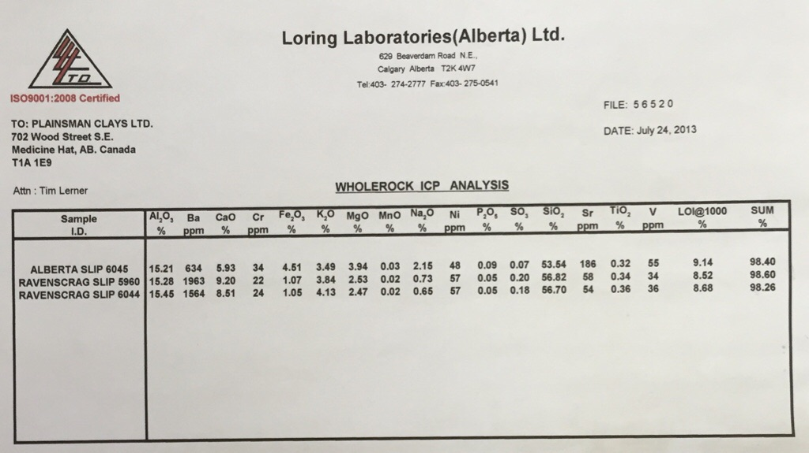
This picture has its own page with more detail, click here to see it.
Powdered samples were sent to the lab. The numbers shown on this report are in percentage-by-weight. That means, for example, that 15.21% of the weight of the dry powder of Alberta Slip is Al2O3. Insight-live knows material chemistries in this way (whereas desktop Insight needs them as formulas). Some non-oxide elements are quantified as parts-per-million (these amounts are not normally high enough to take into account for traditional ceramic purposes). The LOI column shows how much mechanically and chemically bound water are gassed off during firing of the sample. The total is not exactly 100 because of inherent error in the method and compounds not included in the report.
Cone 6 transparent way better without Gerstley Borate.
I surgically removed it to create G2926B!
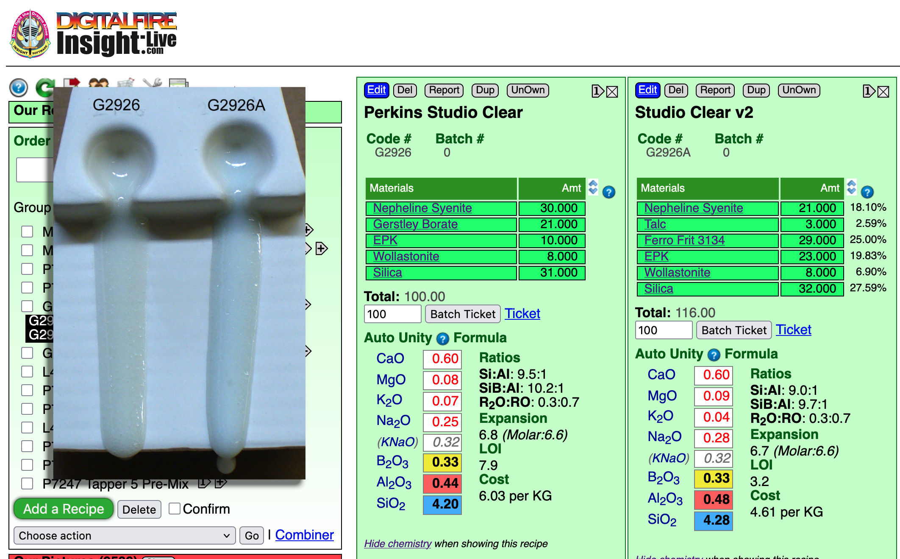
This picture has its own page with more detail, click here to see it.
These are the original cone 6 Perkins Studio Clear (left) beside our fritted version (right). You cannot just substitute a frit for Gerstley Borate (GB), they have very different chemistries. But, using the calculation tools in my account at insight-live.com, I compensated for the differences by juggling other materials in the recipe. I even upped the Al2O3 and SiO2 a little on the belief they would dissolve in the more active melt the frit would create. I was right - a melt-flow GLFL test comparison (inset left) shows that the GB version flows less. Using this on ware exhibited another issue (after doing a IWCT test): Crazing. The very good melt flow on my G2926A fritted version is thus good news: It can accept more silica - the more silica, the more durable and craze resistant it will be. How much did it take? 10% more! That ultimately became the recipe for our standard G2926B cone 6 transparent.
Comparing glaze melt fluidity balls with their chemistries

This picture has its own page with more detail, click here to see it.
Ten-gram GBMF test balls of these three glazes were fired to cone 6 on porcelain tiles. Notice the difference in the degree of melt? Why? You could just say glaze 2 has more frit and feldspar. There is a better explanation, compare these yellow and blue numbers: Glaze 2 and 3 have much more B2O3 (boron, the key flux for cone 6 glazes) and lower SiO2 (silica, it is refractory). But notice that glaze 2 and 3 have the same chemistry, but 3 is melting more? Why? Because of the mineralogy of Gerstley Borate. It release its boron earlier in the firing, getting the melting started sooner. Notice it also stains the glaze amber, it is not as clean as the frit. Notice the calculated thermal expansions: The greater melting of #2 and #3 comes at a cost, their thermal expansions are considerably higher, so they will be more likely to craze. Which of these is the best for functional ware? #1, G2926B (left). Its high SiO2 and enough-but-not-too-much B2O3 make it more durable. And it runs less during firing. And does not craze.
Comparing two glazes having different mechanisms for their matteness

This picture has its own page with more detail, click here to see it.
These are two cone 6 matte glazes (shown side by side in an account at Insight-live). G1214Z is high calcium and a high silica:alumina ratio. It crystallizes during cooling to make the matte effect and the degree of matteness is adjustable by trimming the silica content (but notice how much it runs). The G2928C has high MgO and it produces the classic silky matte by micro-wrinkling the surface, its matteness is adjustable by trimming the calcined kaolin. CaO is a standard oxide that is in almost all glazes, 0.4 is not high for it. But you would never normally see more than 0.3 of MgO in a cone 6 glaze (if you do it will likely be unstable). The G2928C also has 5% tin, if that was not there it would be darker than the other one because Ravenscrag Slip has a little iron. This was made by recalculating the Moore's Matte recipe to use as much Ravenscrag Slip as possible yet keep the overall chemistry the same. This glaze actually has texture like a dolomite matte at cone 10R, it is great. And it has wonderful application properties. And it does not craze, on Plainsman M370 (it even survived a 300F-to-ice water IWCT test). This looks like it could be a great liner glaze.
The unexpected reason for this crazing can be seen in the chemistry
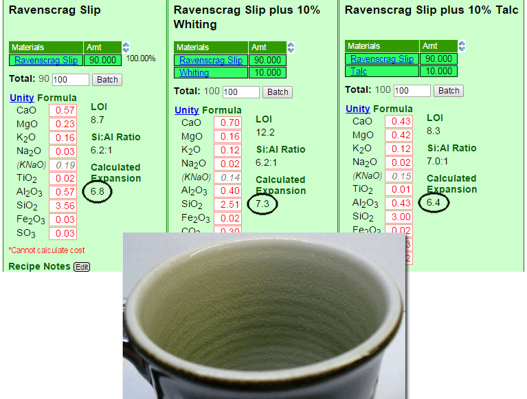
This picture has its own page with more detail, click here to see it.
The glaze is 10% calcium carbonate added to Ravenscrag slip. Ravenscrag Slip does not craze when used by itself as a glaze at cone 10R on this body, so why would adding a relatively low expansion flux like CaO make it craze? This is an excellent example of the value of looking at the chemistry (the three are shown side-by-side in my account at Insight-live.com). The added CaO pushes the very-low-expansion Al2O3 and SiO2 down by 30% (in the unity formula), so the much higher expansion of all the others drives the COE of the whole way up. And talc? It contains SiO2 (so the SiO2 is not driven down nearly as much) and its MgO has a much lower expansion than CaO does.
A high feldspar glaze is settling, running and crazing. What to do?

This picture has its own page with more detail, click here to see it.
The original cone 6 recipe, WCB, fires to a beautiful brilliant deep blue green (shown in column 2 of this Insight-live screen-shot). But it is crazing and settling badly in the bucket. The crazing is because of high KNaO (potassium and sodium from the high feldspar). The settling is because there is almost no clay in the recipe. Adjustment 1 (column 3 in the picture) eliminates the feldspar and sources Al2O3 from kaolin and KNaO from Frit 3110 (preserving the glaze's chemistry). To make that happen the amounts of other materials had to be juggled. But the fired test revealed that this one, although very similar, is melting more (because the frit releases its oxides more readily than feldspar). Adjustment 2 (column 4) proposes a 10-part silica addition. SiO2 is the glass former, the more a glaze will accept without losing the intended visual character, the better. The result is less running and more durability and resistance to leaching.
A large glaze batch mixing error rescued using glaze chemistry
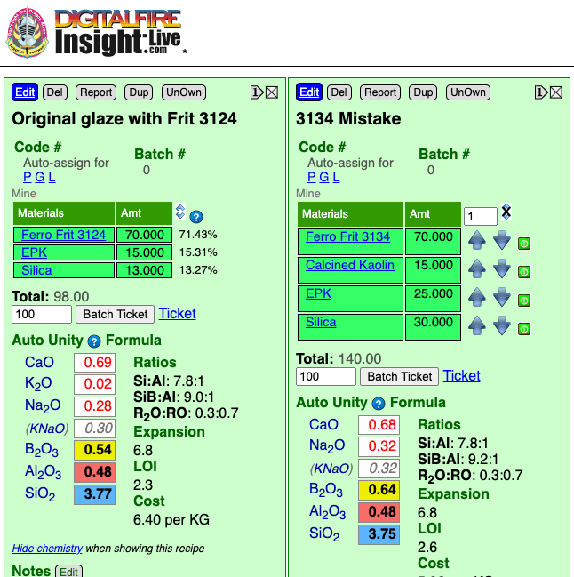
This picture has its own page with more detail, click here to see it.
The person used Frit 3134 instead of 3124, it makes up 70% of the recipe. The glaze melted much more and ran off the ware. That sounds like an impossible-to-fix problem. It just so happens that these frits have very similar chemistry except for one thing: 3134 has almost no Al2O3. That means that kaolin can be added to the bad batch to source the missing Al2O3 (and replenish the shortage of SiO2 at the same time). Extra silica is also needed to restore the full SiO2. The new chemistry is not an exact match, the B2O3 is a little higher, but this should not be an issue. Of course a raw:calcine mix of kaolin is needed (to prevent the glaze from shrinking too much on drying and therefore cracking). From this calculation we can see that for every 100 grams of the original powder we need to add 10 EPK, 15 calcined kaolin and 17 silica. Of course, one would need to know the water content of the slurry, that is calculated as (weight wet - dry weight)/wet weight * 100. If the slurry was 50% water, for example, then every 200 grams of slurry would contain 100 grams of powder.
Substituting a frit to source B2O3 leads to a dead end
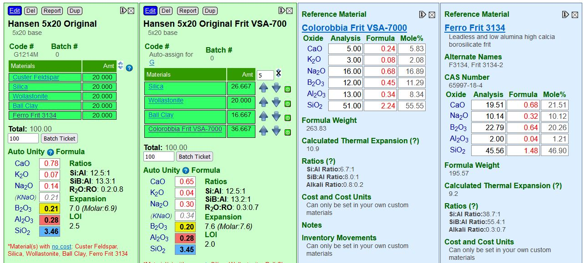
This picture has its own page with more detail, click here to see it.
In the new recipe I am trying to match the oxides (the white, yellow, red, blue boxes). B2O3 is priority, I have supplied enough of the new frit to almost match it, but that far overshoots the Na2O (even if all of the feldspar is removed). While differences in the Al2O3 and SiO2 can be compensated by adjustments in the feldspar, clay and silica, the new frit has far more Na2O and only half the B2O3. The match shown here is the best I am able to achieve, its biggest problem is the significant rise in the calculated thermal expansion, that is going to mean issues with crazing. The only way to use this frit to better match the chemistry of the original glaze would be in combination with another one that has much higher B2O3 and has as little Na2O as possible.
What can you do using glaze chemistry? More than you think!

This picture has its own page with more detail, click here to see it.
There is a direct relationship between the way ceramic glazes fire and their chemistry. These green panels in my Insight-live account compare two glaze recipes: A glossy and matte. Grasping their simple chemistry mechanisms is a first step to getting control of your glazes. To fixing problems like crazing, blistering, pinholing, settling, gelling, clouding, leaching, crawling, marking, scratching, powdering. To substituting frits or incorporating available, better or cheaper materials while maintaining the same chemistry. To adjusting melting temperature, gloss, surface character, color. And identifying weaknesses in glazes to avoid problems. And to creating and optimizing base glazes to work with difficult colors or stains and for special effects dependent on opacification, crystallization or variegation. And even to creating glazes from scratch and using your own native materials in the highest possible percentage.
How to include stains in chemistry calculations in Insight
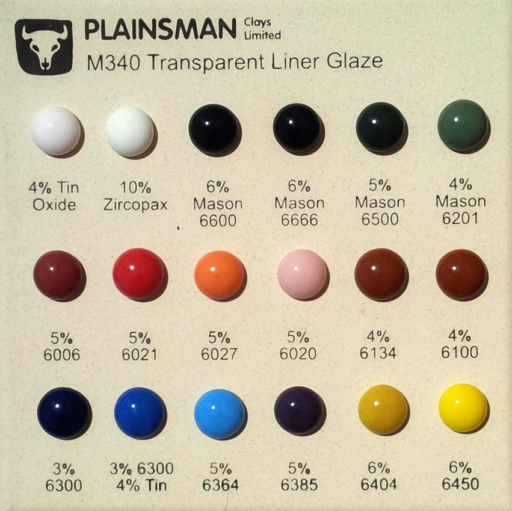
This picture has its own page with more detail, click here to see it.
The simple answer is that you should not. The chemistry of stains is proprietary. Stain particles do not dissolve into the glaze melt like other materials, they suspend in the transparent glass to color it. That is why stains are color stable and dependable. In addition, their percentage in the recipe, not the formula, is the predictor of their effect on the fired glaze. Of course they do impose effects on the thermal expansion, melt fluidity, etc., but these must be rationalized by experience and testing. But you can still enter stains into Insight recipes. Consider adding the stains you use to your private materials database (for costing purposes for example).
Cutlery marking here is directly related to the chemistry of the glaze

This picture has its own page with more detail, click here to see it.
This is an example of cutlery marking in a cone 10 silky matte glaze lacking Al2O3, SiO2 and having too much MgO. Al2O3-deficient glazes often have high melt fluidity and run during firing, this freezes to a glass that lacks durability and hardness. But sufficient MgO levels can stabilize the melt and produce a glaze that appears stable but is not. Glazes need sufficient Al2O3 (and SiO2) to develop hardness and durability. Only after viewing the chemistry of this glaze did the cause for the marking become evident. This is an excellent demonstration of how imbalance in chemistry has real consequences. It is certainly possible to make a dolomite matte high temperature glaze that will not do this (G2571A is an example, it has lower MgO and higher Al2O3 and produces the same pleasant matte surface).
These two frits have one difference in the chemistry: Al2O3.

This picture has its own page with more detail, click here to see it.
These two boron frits (Ferro 3124 left, 3134 right) have almost the same chemistry. But there is one difference: The one on the right has no Al2O3, the one on the left has 10%. Alumina plays an important role (as an oxide that builds the glass) in stiffening the melt, giving it body and lowering its thermal expansion, you can see that in the way these flow when melting at 1800F. The frit on the right is invaluable where the glaze needs clay to suspend it (because the clay can supply the Al2O3). The frit on the left is better when the glaze already has plenty of clay, so it supplies the Al2O3. Of course, you need to be able to do the chemistry to figure out how to substitute these for each other because it involves changing the silica and kaolin amounts in the recipe also.
What happens when ceramic glazes lack Al2O3?

This picture has its own page with more detail, click here to see it.
This happens. They are glossy, but lack thickness and body. They are also prone to boron blue clouding (micro crystallization that occurs because low alumina melts crystallize much more readily on cooling). Another problem is lack of resistance to wear and to leaching (sufficient Al2O3 in the chemistry is essential to producing a strong and durable glass). This is a good example of the need to see a glaze not just as a recipe but as a chemical formula of oxides. The latter view enables us to compare it with other common recipes and the very low Al2O3 is immediately evident. Another problem: Low clay content (this has only 7.5% kaolin) creates a slurry that is difficult to use and quickly settles hard in the bucket.
Glazes of the same chemistry: The fritted one melts better
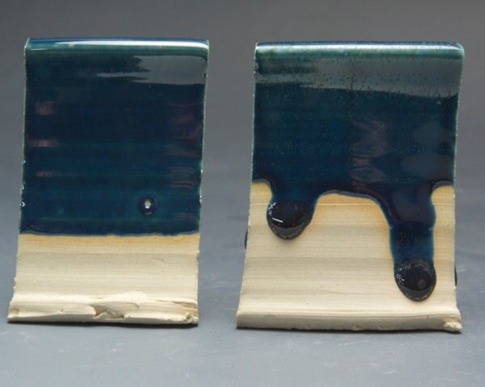
This picture has its own page with more detail, click here to see it.
It seems logical (and convenient) to just say that the kiln does not care what materials source the oxides in a glaze melt. Li2O, CaO, Al2O3, SiO2 are oxides (there are about ten common ones). The kiln just melts everything and constructs the glaze from the ones available. Right? Wrong! Things get more complicated when frits are introduced. Frits are man-made glasses, they melt much more readily than raw materials like feldspar. Raw materials are often crystalline. Crystals put up a fuss when asked to melt, often holding on as long as they can and then suddenly melting. Frits soften over a range and they start melting early. To illustrate: These two glazes have the same chemistry. But the one on the left sources sodium and alumina (Na2O3, Al2O3) from the 48% feldspar present. The other sources these from a frit (only 30% is needed for the same amount of Na2O3). The remainder of the recipe has been juggled to match the other oxides. The frit version is crystallizing on cooling (further testament to how fluid the melt is). What has happened here is great. Why? First, the chemistry has not changed (fewer firing differences). The frit has no Al2O3, it is being sourced from kaolin instead, now the slurry does not settle like a rock. Even better, silica can be added until the melt flow matches (might be up to 20%). That will drop the thermal expansion and reduce crazing. The added SiO2 will add resistance leaching and add durability. Frits are great! But you need to know how to incorporate them into a recipe using a little glaze chemistry.
The Seger Unity Formula
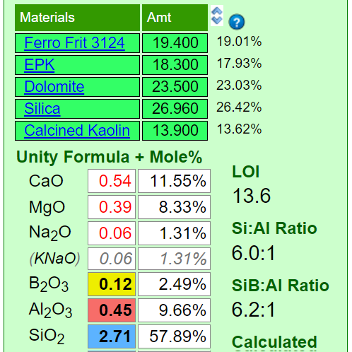
This picture has its own page with more detail, click here to see it.
Ceramic material powders can be crystalline or amorphous (or a combination), and they can be natural or man-made, and they can have very different particle physics. Ceramic materials are classic case studies of the sciences of solid state physics and solid state chemistry. Mineral sources of oxides impose their own melting patterns in glazes. When oxides are then supplied by a different material, a new "system" is entered. An extreme example of this is sourcing Al2O3 to a glaze using calcined alumina instead of kaolin. Although the chemical formula of the glaze, as a whole, may remain unchanged, the fired result would be completely different. This is because very little of the alumina would dissolve into the glaze melt. At the opposite extreme, a different frit could be used to supply a set of oxides (while maintaining the overall chemistry of the glaze), and the fired result would be much more chemically predictable. Why? Because they readily release their oxides to the melt.
Frits vs. raw materials in glazes: It is not just about the chemistry
This picture has its own page with more detail, click here to see it.
The difference between sourcing fluxing oxides from frits vs. raw materials is significant to say the least. The oxides MgO and CaO normally come from natural mineral that melt high. But common frits that source them soften low. The chemistry in the two cone 6 glazes (compared on this melt flow tester) are the same. But G2934Y4 sources the KNaO from Ferro Frit 3110 instead of feldspar and alot of the MgO from Ferro Frit 3249 instead of talc. Even though Y4 has 10% calcined alumina it still flows much better! Alumina, as a source of Al2O3, is a super refractory material (compared to kaolin, the normal source), the glaze should flow less - but the frits overcome even that to create this amazing fluidity in a matte glaze. The lesson: All glazes have a chemistry, but that cannot be taken in isolation from the materials that source it. Glaze chemistry is a relative, not absolute science.
Frits work much better in glaze chemistry
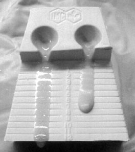
This picture has its own page with more detail, click here to see it.
The same glaze with MgO sourced from a frit (left) and from talc (right). The glaze is 1215U. Notice how much more the fritted one melts, even though they have the same chemistry. Frits are predictable when using glaze chemistry, it is more absolute and less relative. Mineral sources of oxides impose their own melting patterns and when one is substituted for another to supply an oxide in a glaze a different system with its own relative chemistry is entered. But when changing form one frit to another to supply an oxide or set of oxides, the melting properties stay within the same system and are predictable.
Does this poodle belong in this team?
Does the frit you use belong in your glaze recipe?
Made by Gemini
This picture has its own page with more detail, click here to see it.
In industry, it is normal to use frits whose chemistry is either unknown or approximate. The manufacturer has designed them for a specific use, so in many cases they comprise 80%+ of recipes used for that purpose. However, potters more commonly use them as minor additions to recipes, they source needed oxides to the chemical formulas of raw materials.
Substituting a new frit into a recipe, without paying attention to how its chemistry compares, is like adding a dog of unknown abilities to a team like this. It’s a dog, but is it a sled dog? Ceramic glazes fire the way they do because of their oxide chemistry. Frits contribute oxides. Not knowing the chemical makeup of a key ingredient your recipe robs you of the single biggest DIY tool for understanding the fired properties: glaze chemistry.
Inbound Photo Links
|
How and where to have a glaze tested to learn its chemical analysis |
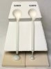 How to reverse-engineer a commercial transparent glaze |
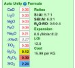 How to choose ceramic materials to source needed oxides |
Sometimes it is better to replace the base in a production glaze recipe |
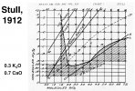 Stull chart showing the SiO2-Al2O3-(0.7CaO+0.3KNaO) system |
Links
| URLs |
https://digitalfire.com/insight
INSIGHT Glaze Chemstry Software |
| URLs |
www.digitalfire.com
Digitalfire website |
| URLs |
http://en.wikipedia.org/wiki/Ceramic_chemistry
Ceramic chemistry on Wikipedia |
| URLs |
http://m.youtube.com/user/tonywilliamhansen
YouTube channel for Tony Hansen |
| URLs |
http://insight-live.com/insight/quotes.php?keyword=chemistry
Does anyone care about glaze chemistry? |
| URLs |
https://www.khanacademy.org/science/chemistry
Inorganic chemistry videos Khan Academy |
| Articles |
Where do I start in understanding glazes?
Break your addiction to online recipes that don't work or bottled expensive glazes that you could DIY. Learn why glazes fire as they do. Why each material is used. How to create perfect dipping and brushing properties. Even some chemistry. |
| Articles |
Stoneware Casting Body Recipes
Some starting recipes for stoneware and porcelain with information on how to adjust and adapt them |
| Articles |
Chemistry vs. Matrix Blending to Create Glazes from Native Materials
Is it better to do trial and error line and matrix blending of materials to formulate glazes or is it better to use glaze chemistry right from the start? |
| Articles |
Glaze Chemistry Basics - Formula, Analysis, Mole%, Unity
Part of changing your viewpoint of glazes, from a collection of materials to a collection of oxides, is learning what a formula and analysis are, how conversion between the two is done and how unity and LOI impact this. |
| Glossary |
Medium Temperature
These are stoneware glazes that fire in the range of 1200C (2200F). They often contain boron to assist with melting. |
| Glossary |
Frit
Frits are used in ceramic glazes for a wide range of reasons. They are man-made glass powders of controlled chemistry with many advantages over raw materials. |
| Glossary |
Boron Blue
Boron blue is a glaze fault involving the crystallization of calcium borate. It can be solved using glaze chemistry. |
| Glossary |
Limit Formula
A way of establishing guideline for each oxide in the chemistry for different ceramic glaze types. Understanding the roles of each oxide and the limits of this approach are a key to effectively using these guidelines. |
| Glossary |
Ceramic Oxide
In glaze chemistry, the oxide is the basic unit of formulas and analyses. Knowledge of what materials supply an oxide and of how it affects the fired glass or glaze is a key to control. |
| Glossary |
Decomposition
In ceramic manufacture, knowing about the how and when materials decompose during firing is important in production troubleshooting and optimization |
| Glossary |
Triaxial Glaze Blending
In ceramics many technicians develop and adjust glazes by blending two, three or even four l materials or glazes together to obtain new effects |
| Glossary |
Glaze Mixing
In ceramics, glazes are developed and mixed as recipes of made-made and natural powdered materials. Many potters mix their own, you can to. There are many advantages. |
| Glossary |
Characterization
In ceramics, this normally refers to the process of doing physical or chemical testing on a raw material to accurately describe it in terms of similar ones. |
| Glossary |
Unity Formula
The chemistry of ceramic glazes are normally expressed as formulas. A unity formula has been retotaled to make the numbers of flux oxides total one. |
| Glossary |
Ceramic Glaze
Ceramic glazes are glasses that have been adjusted to work on and with the clay body they are applied to. |
| Glossary |
Ceramic Glaze Defects
Ceramic glaze defects include things like pinholes, blisters, crazing, shivering, leaching, crawling, cutlery marking, clouding and color problems. |
| Projects |
Oxides
|
| Oxides | KNaO - Potassium/Sodium Oxides |
| Media |
How I Formulated G2934 Cone 6 Silky MgO Matte Glaze Using Insight-Live
I will show you how found a recipe on Facebook, assessed it, substituted my own materials, tested it, adjusted it. |
| Video 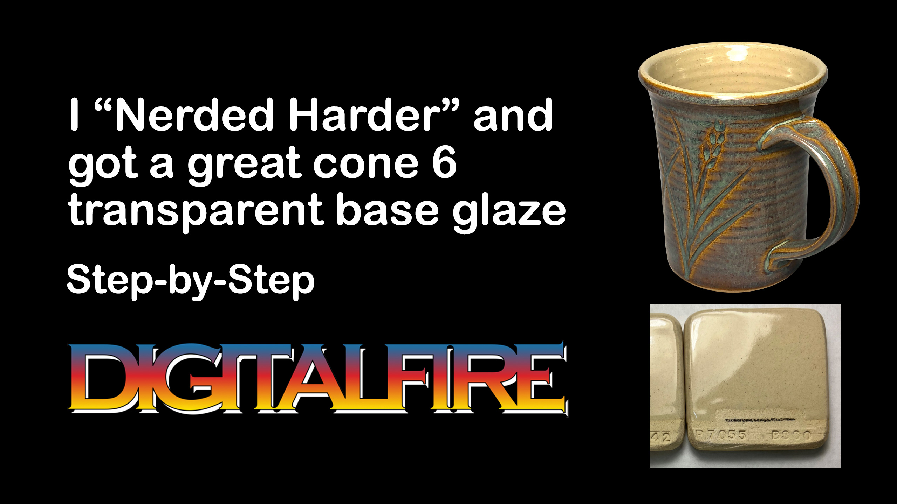 |
How I Developed the G2926B Cone 6 Transparent Base Glaze
How I found a pottery glaze recipe on Facebook, substituted a frit for the Gerstley Borate (using glaze chemistry), compared using a melt flow tester, added as much extra SiO2 as it would tolerate, and got a durable and easy-to-use cone 6 clear. |
| Media |
Compare the Chemistry of Recipes Using Insight-Live
Watch me open three recipes side-by-side and turn calculation on for each (in this 19 second video). |
 PayPal | No tracking, No ads, No paywall, No transient content! Just organized, concise information constantly updated and improved. Was this helpful? Consider supporting me. |
| By Tony Hansen Follow me on        |  |
Got a Question?
Buy me a coffee and we can talk 

https://digitalfire.com, All Rights Reserved
Privacy Policy